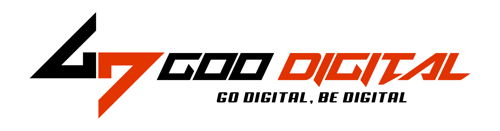
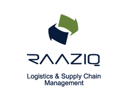

About Me
When I am not in one of my classes or looking at potential markets to analyse, I spend my time playing volley ball.
Education
Bachelor of Science in Mathematics-Economics (Joint Major) with a minor in Computational Finance
Lahore University of Management Sciences (LUMS), Lahore
CGPA: 3.91/4.00; Dean's honors list throughout; 50% Merit Scholar
2018 – Present (Expected Graduation: June, 2022)Key Courses: Applied Probability, Applied Macroeconomics, Advanced Microeconomics, Financial Derivatives, Quantitative Finance, Advanced Calculus, Financial Econometrics 1, Econometrics, Differential Equations, Intro to Programming, Financial Accounting, Management Accounting, Theory of Automata, Formal Mathematics, Actuarial Sciences & Insurance, Math of Finance, Statistics, Game Theory.
Professional Experience
Career Services Office Brand Ambassador
August 2021 – Present
Teaching Assistant for the Graduate-level course ‘FMG 6302: Derivatives & Fixed Income Securities’ with Dr. Ferhana Ahmed as the Instructor
- Representing the student body as I work in collaboration with the CSO at LUMS to refine avenues for employability of my fellow scholars.
- Preparing the student body for the corporate future ahead of them or the academic ventures they might wish to undertake.
- Working on and helping develop the portfolios of countless individuals as well as providing them with a general guideline on how to craft an impressive undergraduate timeline.
Spring 2021
Teaching Assistant for the course ‘ECON 233: Introduction to Game Theory’ at LUMS (Spring 2021-22) with Dr. Osama Khan as the Instructor
Spring 2021
 Goo Digital
Portfolio A: Managing Director
January 2021 – May 2021
Portfolio B: Business Development Manager
- Managed and supervised the entirety of operations of all departments, working alongside the CEO, to give strength to the foundations of this emerging startup.
- Handled cashflows, established SOPs, hired, and followed progress of employees, evaluated accounts and crafted budgets, set goals for each department, held meetings, and demanded departmental progress reports, held meetings summarizing mission plans, made budgets, and gave foundations to the legal requirements for this startup: including company registration.
- The marketing, finance, accounts, legal, business, sales, IT, and design teams fell under the ambit of supervisory role, and I enabled the company to get in formal order and cross break-even each month.
June 2021 – December 2021
- Took the position of head of business at this IT based startup in Lahore and managed a team of 10 business developers to manage closing projects and generating leads for the company.
- Grew business for Goo digital by engaging with both the local and foreign market to target clientele demanding services related to social media management, search engine optimization, website development, application development, UI/UX development, visual production, e-commerce platform development, content creation, software development, game development.
- Lead the business development team in hitting the market at a pace 3x faster than before and handled meetings when prospects turned to potential clients.
- Successfully average monthly generated sales of over Rs 1,000,000, thereby allowing the office to expand, automate operations, and invest in its sister venture: Cup of Tea Cafe
Geniousdev
Business Development Intern
May 2021 - June 2021
- Underwent rigorous training at this business development consultancy firm which specialized in providing services of business development to various technology solution associates and startups.
- Was responsible for generating at least 1 lead per day and crafting at least 50 different proposals for prospect clients and jobs.
- Managed existing projects and clientele, and closed deals amounting to Rs 1,500,000 under the supervision of the senior manager.
The Mirror
Portfolio A: Finance Intern
January 2021 – May 2021
Portfolio B: Director of Finance
- On a five months contract with The Mirror PK, a Pakistan-based NGO, I was one of three panel members setting up their department of finance, their internal accounts, and helping them with registration, initiation of the donations and sponsorship program, namely Hayat, and other finance related projects.
June 2021 – August 2021
- Entered a contract with The Mirror PK as their Finance Director. I used to supervise all financials related to this NGO including book-keeping, budgeting, planning finances for projects, making evaluations and future projections, drafting financial documents, and managing the doings of the 10 members of this department.
- Was also responsible for hiring the 10 members after conducting over 40 interviews and evaluating them in categories based on departmental suitability, professional experience, and their self-confidence levels.
- Critically reported on and tracked member performance, held 5 guest-speaker sessions for the skilling of my interns, held bi-weekly departmental meetings, created a positive social atmosphere in the online environment, and allowed for individual growth by assigning them rigorous tasks of reporting, drafting documents, and preparing proposals and presentations.
Intern
Justice Project Pakistan
September 2020 – October 2020
- Worked on the final production stages of the Pakistani animated masterpiece ‘Before the Sun Comes Up’ and learned development, design, and execution of a puppet film
- Engaged with the social issue of capital punishment in Pakistan by attending seminars held by producers working in this domain, artists, puppeteers, and writers.
- Learned the intricate process of film direction and production under the mentorship of Mr. Sarmad Khoosat.
ICI Pakistan Limited
Marketing Intern
January 2020 – February 2020
- Conducted a market mapping exercise where I used MS Excel and other dashboard tool sets (including pivot) for data cleaning and analysis of market data for the wood glue developed by ICI.
- Designed and implemented a telephonic survey that was used by the marketing team to gather data from the entire Pakistani market of competitive analysis, market shares, volume traded, seasonal trends, and potential for efficacious marketing for the product.
- Established tabulated statistical results of over 1,000 surveys that were then handed over to the sales team to help develop them develop their strategy in future.
 TS & TS (Raaziq Group Ltd)
Intern
July 2017 – August 2017
- My first corporate exposure allowed me to follow and understand the workings of the Accounts, HR, and Legal departments and helped groom my professional ethic and demeanor.
- Learned ledger keeping, managing accounts, assessing invoices and quotations, employee handling and interviewing new recruits, as well as assessing contracts, addendums, MOUs, MOAs, amortization schedules etcetera.
- Informed myself of principles and operations of supply chain management and the transport service industry within Pakistan.